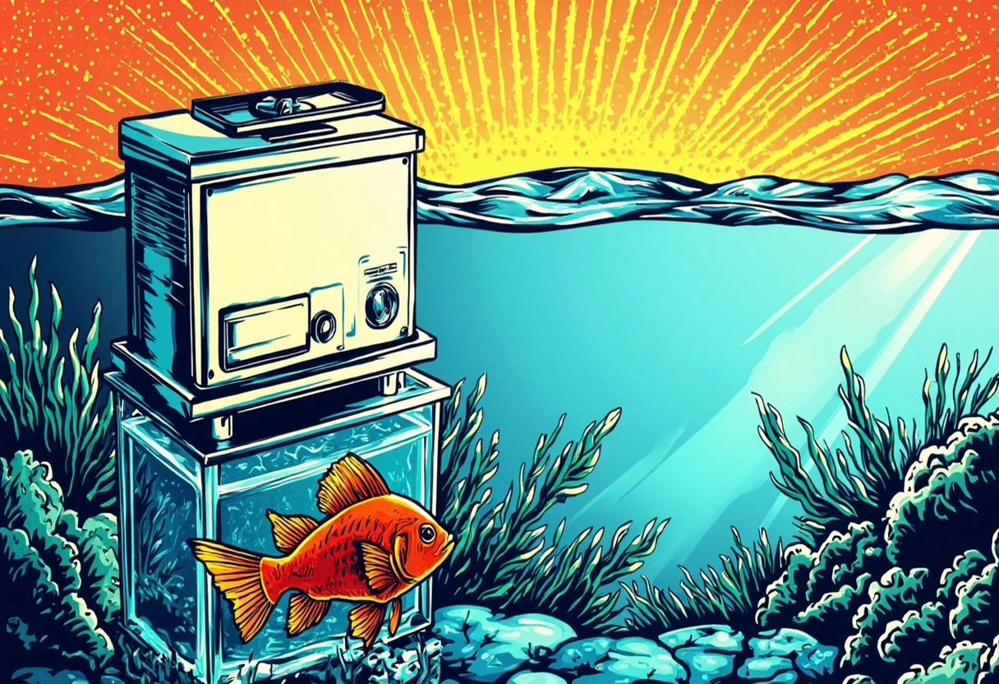

UV-Klärer im Aquarium: Wann sie helfen und wann nicht
Ein UV-Klärer klingt nach Wunderwaffe gegen trübes Wasser – und in vielen Fällen ist er das auch. Doch wie jedes technische Gerät im Aquarium hat auch die UV-C-Lampe ihre Grenzen, ihre Nebenwirkungen und ihre ganz eigenen Regeln. In diesem Guide erfährst du, wann ein UV-Klärer wirklich sinnvoll ist, wie du ihn richtig dimensionierst, installierst und betreibst, und welche Fehler du unbedingt vermeiden solltest. Denn ein falsch eingesetzter UV-Klärer kann mehr schaden als nutzen – und das will niemand.
UV-C-Strahlung tötet Mikroorganismen ab, indem sie deren DNA zerstört. Das klingt radikal, ist aber im geschlossenen Wasserkreislauf eines Aquariums eine gezielte und sehr effektive Methode, um Schwebealgen, Bakterien und Krankheitserreger unschädlich zu machen. Wichtig ist: Der UV-Klärer desinfiziert das vorbeiströmende Wasser – er filtert nichts, er entfernt keine gelösten Stoffe und er bekämpft keine Algen, die auf Oberflächen sitzen. Er ist ein Werkzeug für klares Wasser, kein Allheilmittel für ein krankes Aquarium.
Was UV-C im Aquarium wirklich macht
UV-C ist kurzwellige ultraviolette Strahlung im Bereich von 200 bis 280 Nanometern. In Aquarienfiltern kommen fast ausschließlich UV-C-Lampen mit einer Wellenlänge von 253,7 nm zum Einsatz – genau der Bereich, der Mikroorganismen am effektivsten abtötet. Die Strahlung durchdringt die Zellwand von Bakterien, Viren, Pilzsporen und Einzellern und zerstört deren Erbsubstanz. Die abgetöteten Organismen werden anschließend über den Filtermechanismus aus dem Wasser entfernt oder dienen Bakterien als Nahrung.
Ein häufiges Missverständnis: UV-C tötet nicht nur schädliche, sondern auch nützliche Mikroorganismen ab. Das ist richtig – und der Grund, warum ein UV-Klärer nicht dauerhaft laufen sollte. Die nützlichen Bakterien sitzen aber zum allergrößten Teil im Filtermedium und im Bodengrund, nicht im freien Wasser. Ein kurzer Durchlauf durch den UV-Klärer schadet der Filterbiozönose kaum, solange die Verweildauer nicht zu lang ist und die Lampe nicht rund um die Uhr läuft.
Was ein UV-Klärer kann
- Schwebealgen beseitigen: Das ist die klassische Anwendung. Grünes Wasser wird innerhalb von 2–5 Tagen klar.
- Keimdruck senken: Die Gesamtkeimzahl im Wasser sinkt deutlich – besonders wichtig bei empfindlichen Fischen oder nach Medikamenteneinsatz.
- Krankheitserreger abtöten: Bakterien wie Flexibacter columnaris (Maulflossenfäule) oder Ichthyophthirius (Weißpünktchenkrankheit) können im freien Wasser unschädlich gemacht werden.
- Wasser klären: Auch ohne sichtbare Algenblüte wird das Wasser glasklarer – der sogenannte „Brillanz-Effekt“.
Was ein UV-Klärer nicht kann
- Algen auf Scheiben oder Pflanzen entfernen: Festsitzende Algen wie Pinsel- oder Bartalgen werden nicht beeinflusst.
- Gelöste Schadstoffe beseitigen: Nitrit, Nitrat, Phosphat und andere chemische Verbindungen bleiben unverändert.
- Einen mangelhaften Filter ersetzen: Wenn die biologische Filterung nicht stimmt, hilft auch die beste UV-C-Lampe nicht.
- Parasiten auf den Fischen abtöten: Nur frei schwimmende Stadien werden erfasst – Parasiten, die auf dem Fisch sitzen, überleben.
Grünes Wasser und Schwebealgen – die klassische UV-Anwendung
Grünes Wasser ist die mit Abstand häufigste Einsatzursache für einen UV-Klärer. Die Ursache ist eine plötzliche Massenvermehrung von Schwebealgen – einzellige Algen, die sich im freien Wasser vermehren und es innerhalb von wenigen Tagen grün und trüb machen können. Besonders im Frühjahr oder nach einer starken Düngung tritt dieses Phänomen auf. Der UV-Klärer tötet die Algenzellen ab, woraufhin sie ausflocken und vom Filter ausgeschieden werden. Nach 48 bis 72 Stunden Dauerbetrieb ist das Wasser meist wieder klar.
Wichtig: Der UV-Klärer bekämpft nur die Symptome, nicht die Ursache. Schwebealgen entstehen durch ein Ungleichgewicht von Licht und Nährstoffen. Wenn du den UV-Klärer nach der Klärung wieder abnimmst, ohne die Ursache zu beheben, kommt das grüne Wasser garantiert zurück. Prüfe also parallel die Beleuchtungsdauer (maximal 8–10 Stunden), den Nitrat- und Phosphatgehalt und die CO₂-Versorgung. Ein stabiler Pflanzenbestand ist die beste Vorbeugung gegen Schwebealgen.
Schwebealgen erkennen und bestätigen
Nicht jede Trübung ist eine Algenblüte. Bakterielle Trübungen (milchig-weißlich) und Schwebeteilchen (staubig-grau) werden durch UV-C nur bedingt bekämpft. Um sicherzugehen, fülle ein Glas mit Aquarienwasser und halte es gegen das Licht. Schwebealgen zeigen sich als feine grüne Schwebeteilchen, die das Licht grünlich färben. Lässt du das Glas über Nacht stehen, setzen sich die Algen als grüner Belag am Boden ab.
| Trübungsart | Aussehen | Hilft UV-C? |
|---|---|---|
| Schwebealgen (grünes Wasser) | Grünliche Trübung, feine Partikel | ✅ Sehr gut |
| Bakterienblüte | Milchig-weißliche Trübung | ⏺ Eingeschränkt |
| Schwebstoffe (Mulm, Staub) | Grau-bräunliche Trübung | ❌ Nein |
| Huminstoffe (Holz, Torf) | Gelb-bräunliche Färbung | ❌ Nein |
Keimdruck realistisch einordnen
Der Begriff „Keimdruck“ beschreibt die Gesamtbelastung des Wassers mit Mikroorganismen. Ein niedriger Keimdruck ist wünschenswert, weil er das Risiko von Krankheitsausbrüchen senkt. Ein UV-Klärer reduziert die Keimzahl im freien Wasser um 90 bis 99 Prozent – das ist ein enormer Effekt. Insbesondere bei empfindlichen Fischarten (Diskus, Skalare, Zwergbuntbarsche) oder nach einem stressigen Ereignis wie Transport oder Medikamentenbehandlung kann der UV-Klärer wertvolle Dienste leisten.
Allerdings: Ein steriles Aquarium ist kein gesundes Aquarium. Fische haben ein Immunsystem, das trainiert werden muss. Eine gewisse Grundbelastung mit Bakterien ist normal und sogar gesund. Wer den UV-Klärer dauerhaft betreibt, riskiert, dass die Fische weniger widerstandsfähig werden. Die Devise lautet also: So viel wie nötig, so wenig wie möglich. Der UV-Klärer ist ein Werkzeug für akute Probleme, keine Dauerlösung.
Dimensionierung – die richtige Größe für dein Becken
Die Wirksamkeit eines UV-Klärers hängt von drei Faktoren ab: der Leistung der UV-C-Lampe in Watt, der Durchflussgeschwindigkeit und der Verweildauer des Wassers im Bestrahlungsraum. Zu wenig Watt oder zu viel Durchfluss – und das Wasser wird nicht ausreichend bestrahlt. Zu viel Watt oder zu wenig Durchfluss – und das Wasser wird überdesinfiziert, was unnötig Energie kostet und die nützlichen Bakterien stärker belastet.
Faustregel für die Wattzahl
| Beckengröße | Empfohlene UV-C-Leistung | Durchfluss (ca.) |
|---|---|---|
| Bis 60 Liter | 3–5 Watt | 100–200 l/h |
| 60–120 Liter | 5–8 Watt | 200–400 l/h |
| 120–250 Liter | 8–11 Watt | 400–600 l/h |
| 250–400 Liter | 11–18 Watt | 600–1000 l/h |
| 400–600 Liter | 18–30 Watt | 1000–1500 l/h |
| Über 600 Liter | 30–55 Watt | 1500–2500 l/h |
Die entscheidende Größe ist die Verweildauer: Das Wasser sollte sich mindestens 0,5 bis 1 Sekunde im Bestrahlungsfeld der UV-C-Lampe befinden. Bei zu hohem Durchfluss wird die Zeit unterschritten, und die Mikroorganismen überleben. Die meisten Hersteller geben die optimale Durchflussmenge für jedes Modell an – halte dich daran. Ein zu langsamer Durchfluss (unter 50 % des empfohlenen Wertes) kann zur Überhitzung der Lampe führen und deren Lebensdauer verkürzen.
Einsatz im Innen- oder Außenfilterkreislauf
UV-Klärer werden in der Regel in den Filterkreislauf eingebunden. Es gibt zwei Varianten: Den Inline-UV-Klärer, der zwischen Filterausgang und Rücklauf ins Becken geschaltet wird, und den Tauch-UV-Klärer, der direkt im Becken oder im Filterkasten platziert wird. Die Inline-Variante ist effektiver, weil das gesamte Wasser durch die Kammer geleitet wird. Der Tauch-UV-Klärer bestrahlt nur das unmittelbar umgebende Wasser und ist daher weniger effizient – er eignet sich für kleine Becken oder den Einsatz im Filterkasten von Außenfiltern.
Durchfluss und Installation – worauf du achten musst
Die Installation eines UV-Kläres ist technisch anspruchsvoll, aber mit ein wenig handwerklichem Geschick gut machbar. Wichtigste Grundregel: Der UV-Klärer gehört immer nach dem Filter, nicht davor. Das Wasser sollte zuerst biologisch und mechanisch gereinigt werden, bevor es die UV-C-Kammer durchläuft. Sonst setzen sich Schwebstoffe auf der Quarzhülse ab, und die Strahlung wird blockiert. Zudem werden die nützlichen Bakterien im Filter nicht unnötig bestrahlt.
Schritt-für-Schritt-Installation (Inline-Variante)
- Standort wählen: Der UV-Klärer sollte horizontal oder leicht schräg montiert werden, damit die Lampe gleichmäßig umspült wird. Eine vertikale Montage kann zu Luftblasenbildung führen.
- Filterausgang identifizieren: Trenne den Rücklaufschlauch vom Filter zum Aquarium.
- UV-Klärer einschleifen: Setze den UV-Klärer zwischen Filterausgang und Rücklauf. Die meisten Modelle haben Schlauchtüllen für 12/16 mm oder 16/22 mm Schläuche.
- Rückschlagventil einbauen: Besonders bei Becken unterhalb des Filters (Unterschrank-Aufstellung) verhindert ein Rückschlagventil, dass Wasser aus dem Becken zurückfließt, wenn der Filter abgeschaltet wird.
- Dichtungen prüfen: Alle O-Ringe und Dichtungen müssen sauber und leicht mit etwas Silikonfett eingerieben sein. Undichte Stellen sind die häufigste Ursache für Wasserschäden.
- Anschluss herstellen: Schließe das Netzkabel an eine Zeitschaltuhr an – damit kannst du die Betriebsdauer steuern.
- Testlauf: Lasse den Filter laufen und prüfe alle Verbindungen auf Dichtigkeit. Erst dann den UV-Klärer einschalten.
🛒 UV-C Klärer Aquarium – empfehlenswerte Modelle
Gegen grünes Wasser und Schwebealgen gezielt einsetzen – achte auf Wattzahl, Durchfluss und Austauschlampe.
Werbelink: Als Amazon-Partner verdienen wir an qualifizierten Käufen.
Dauerbetrieb oder Kur – was ist besser?
Eine der wichtigsten Fragen beim UV-Klärer lautet: Soll ich ihn dauerhaft laufen lassen oder nur bei Bedarf? Die Antwort hängt von deiner Zielsetzung ab. Für die akute Bekämpfung von Schwebealgen reichen in der Regel 3–5 Tage Dauerbetrieb. Das Wasser klart auf, die Algen sind tot – und die Ursache sollte in der Zwischenzeit behoben sein. Danach schaltest du den UV-Klärer aus.
Wenn du den UV-Klärer zur Keimreduktion oder zur Prophylaxe einsetzen möchtest, empfiehlt sich ein Intervallbetrieb. Bewährt hat sich ein Zyklus von 6–8 Stunden pro Tag, idealerweise während der Lichtphase, wenn die Fische aktiv sind und die Bakterien im Filter ohnehin arbeiten. Manche Aquarianer schalten den UV-Klärer auch nur jede zweite Nacht für 4–6 Stunden ein. Wichtig: Die Lampe hat eine begrenzte Lebensdauer (meist 8.000–9.000 Betriebsstunden, also etwa ein Jahr). Jede eingeschaltete Stunde kostet Lebensdauer – und die Lampe verliert mit der Zeit an Effizienz, bevor sie komplett ausfällt.
Wann Dauerbetrieb sinnvoll sein kann
- Akute Schwebealgenblüte: Im Dauerbetrieb bis zur Klärung (maximal 7 Tage).
- Nach Medikamentenbehandlung: 3–4 Tage Dauerbetrieb, um tote Bakterien und Keime zu entfernen.
- Nach Fischzugang oder Quarantäne: 5–7 Tage Dauerbetrieb zur Absicherung.
- Bei empfindlichen Fischen (Diskus): Kurweise 2–3 Tage pro Woche.
Nebenwirkungen – was passiert mit den Bakterien?
Der UV-Klärer macht keinen Unterschied zwischen guten und schlechten Bakterien. Jeder Mikroorganismus, der durch die Kammer geschleust wird, wird abgetötet – unabhängig davon, ob es sich um einen gefährlichen Krankheitserreger oder ein harmloses Nitrifikationsbakterium handelt. Die entscheidende Frage ist: Welcher Anteil der nützlichen Bakterien kommt überhaupt durch die UV-C-Kammer?
Die nitrifizierenden Bakterien (Nitrosomonas, Nitrobacter), die Ammoniak und Nitrit abbauen, leben nicht im freien Wasser, sondern in einer Biofilmschicht auf dem Filtermaterial, im Bodengrund und auf allen Oberflächen im Aquarium. Der Anteil der frei schwimmenden Bakterien macht weniger als 1 Prozent der Gesamtpopulation aus. Ein UV-Klärer schadet der Filterleistung also kaum, solange er nicht das Filtermaterial selbst bestrahlt. Das ist auch der Grund, warum der UV-Klärer immer nach dem Filter installiert werden muss.
Trotzdem: Bei übermäßigem Dauerbetrieb (Wochen bis Monate) kann die natürliche Bakterienflora des Wassers beeinträchtigt werden. Das Wasser wird „steriler“, was die Ansiedlung von unerwünschten Keimen begünstigen kann – ähnlich wie bei der übermäßigen Einnahme von Antibiotika beim Menschen. Ein bewusster, zeitlich begrenzter Einsatz ist daher immer die bessere Wahl.
Kaufkriterien – worauf du beim UV-Klärer achten solltest
Ein UV-Klärer ist keine billige Anschaffung, aber auch kein Gerät, das man alle paar Monate austauscht. Ein solides Gerät hält bei guter Pflege mehrere Jahre – die Lampe wird jährlich getauscht. Achte beim Kauf auf folgende Kriterien:
Wichtige Kaufkriterien im Überblick
| Kriterium | Worauf achten? |
|---|---|
| Wattzahl | Zur Beckengröße passend wählen (siehe Tabelle oben). |
| Durchfluss | Mindestens der Beckeninhalt pro Stunde sollte umgewälzt werden können. |
| Quarzhülse | Eine hochwertige Quarzhülse mit hoher UV-Durchlässigkeit ist entscheidend. Billiggläser altern schnell. |
| Anschlüsse | Schlauchtüllen für 12/16 mm oder 16/22 mm sollten dabei sein – oder du kaufst Adapter. |
| Reinigung | Die Quarzhülse muss regelmäßig gereinigt werden können. Achte auf leichten Zugang. |
| Ersatzlampen | Prüfe, ob Ersatzlampen auch langfristig verfügbar sind. Manche Hersteller stellen die Produktion schnell ein. |
| Qualität der Verarbeitung | Edelstahl ist langlebiger als Kunststoff – aber auch teurer. Kunststoff reicht für den Normalgebrauch. |
| Garantie | Mindestens 2 Jahre Garantie sollten es sein. Marken wie JBL, Eheim, Tetra und Sera geben 2–3 Jahre. |
Beliebte Marken und Modelle
- JBL UV-C: Sehr gute Verarbeitung, leichte Reinigung, weite Modellpalette von 3 bis 36 Watt.
- Eheim UV-Klärer: Solide Qualität, oft mit integrierter Pumpe erhältlich – ideal für den Einstieg.
- Tetra UV: Günstige Einstiegsmodelle, aber oft mit geringerer Quarzhülsenqualität.
- Sera UV: Gutes Preis-Leistungs-Verhältnis, einfache Montage, zuverlässige Technik.
- Dennerle UV: Hochwertige Technik, teurer, aber mit langer Lebensdauer und gutem Kundenservice.
Reinigung und Wartung des UV-Klärers
Die Reinigung der Quarzhülse ist die wichtigste Wartungsmaßnahme. Bereits eine dünne Schicht aus Kalk, Algen oder Bakterien auf der Hülse reduziert die UV-Durchlässigkeit um 30–50 Prozent. Reinige die Hülse daher alle 4–6 Wochen, bei kalkhaltigem Wasser häufiger. Gehe dabei vorsichtig vor: Die Quarzhülse ist dünnwandig und bricht leicht. Verwende einen weichen Schwamm oder ein Mikrofasertuch, niemals eine Scheuerbürste oder ein Messer. Kalkablagerungen entfernst du mit Essigessenz (1:3 mit Wasser verdünnt) – aber nur außerhalb des Beckens und gründlich nachspülen.
Die UV-C-Lampe selbst hat eine Lebensdauer von etwa 8.000 Betriebsstunden – das entspricht etwa einem Jahr bei Dauerbetrieb. Auch wenn die Lampe noch leuchtet (ein schwaches Blau-Lila-Leuchten ist normal), sinkt die UV-C-Leistung mit der Zeit ab. Nach 12 Monaten ist die Desinfektionswirkung auf etwa 50 Prozent gesunken. Tausche die Lampe daher jährlich aus – am besten gleich zu Beginn der wärmeren Jahreszeit, wenn die Keimbelastung im Aquarium natürlicherweise steigt.
Häufige Fehler beim UV-Klärer
Im Laufe der Jahre habe ich einige immer wiederkehrende Fehler bei der Verwendung von UV-Klärern beobachtet. Hier sind die häufigsten:
| Fehler | Auswirkung | Lösung |
|---|---|---|
| Zu hoher Durchfluss | Wasser wird nicht ausreichend bestrahlt – keine Wirkung gegen Schwebealgen. | Durchfluss auf Herstellerangabe reduzieren oder stärkere Lampe wählen. |
| Dauerbetrieb ohne Notwendigkeit | Nützliche Bakterien werden geschwächt, Lampe verschleißt unnötig. | Nur bei Bedarf oder im Intervallbetrieb einsetzen. |
| Quarzhülse verschmutzt | UV-Durchlässigkeit sinkt drastisch – das Gerät läuft „ins Leere“. | Regelmäßig reinigen, spätestens alle 6 Wochen. |
| Lampe nicht rechtzeitig getauscht | Gerät läuft, desinfiziert aber nicht mehr – falsche Sicherheit. | Lampe jährlich tauschen, Datum notieren. |
| UV-Klärer vor dem Filter montiert | Nützliche Filterbakterien werden abgetötet, Giftstoffe steigen an. | UV-Klärer immer NACH dem Filter montieren. |
| Falsche Wattzahl | Zu schwach: keine Wirkung. Zu stark: unnötige Energieverschwendung und Überhitzung. | An Beckengröße anpassen (siehe Tabelle). |
FAQ – häufige Fragen zum UV-Klärer
Kann ein UV-Klärer Fische schädigen?
Bei korrekter Installation und nicht zu langen Betriebszeiten nicht. Die UV-C-Strahlung bleibt im Gerät eingeschlossen. Fische, die direkt in die Kammer schwimmen (bei Tauchmodellen), können Haut- und Kiemenschäden davontragen – daher gehören Tauch-UV-Klärer in den Filterkasten, nicht frei ins Becken.
Muss der UV-Klärer nachts laufen?
Nachts ist der Sauerstoffgehalt im Aquarium niedriger und die Fische ruhen. Wenn der UV-Klärer die Strömung beeinflusst (z. B. über eine integrierte Pumpe), solltest du ihn nachts ausschalten. Ansonsten ist der Betrieb nachts möglich, aber nicht zwingend notwendig.
Hilft ein UV-Klärer gegen Algen auf der Scheibe?
Nein. UV-C bekämpft nur freischwimmende (Schweb-)Algen. Algenbelag auf Scheiben, Steinen oder Pflanzen muss manuell entfernt werden – oder durch Algenfresser wie Otocinclus, Amanogarnelen oder Schnecken.
Kann ich den UV-Klärer mit Medikamenten kombinieren?
Viele Medikamente werden durch UV-C-Strahlung zersetzt oder in ihrer Wirkung beeinträchtigt. Schalte den UV-Klärer während der Medikamentenbehandlung aus. Nach der Behandlung (ca. 3–5 Tage nach der letzten Gabe) kannst du ihn zur Keimreduktion wieder einschalten.
Wie höre ich, ob der UV-Klärer noch funktioniert?
Die meisten UV-C-Lampen geben ein schwaches blau-violettes Leuchten ab, das durch das Sichtfenster des Geräts sichtbar ist. Wenn dieses Leuchten ausbleibt oder deutlich schwächer wird, ist die Lampe defekt oder am Ende ihrer Lebensdauer.
Fazit – UV-Klärer gezielt und bewusst einsetzen
Ein UV-Klärer ist ein mächtiges Werkzeug im Kampf gegen grünes Wasser, Schwebealgen und unerwünschte Keime. Richtig dimensioniert, installiert und betrieben, sorgt er innerhalb weniger Tage für kristallklares Wasser und senkt das Krankheitsrisiko für deine Fische. Doch er ist kein Allheilmittel und ersetzt keine stabile Filterung, keine regelmäßige Pflege und keine Problemanalyse. Wer den UV-Klärer als Dauerlösung für ein grundlegendes Ungleichgewicht einsetzt, wird enttäuscht.
Meine Empfehlung: Kaufe einen UV-Klärer erst dann, wenn du konkret ein Problem mit Schwebealgen oder Keimbelastung hast. Für ein stabiles, eingelaufenes Becken mit gesundem Pflanzenbestand und moderatem Fischbesatz ist er in der Regel nicht notwendig. Wenn du einen besitzt, setze ihn bewusst und zeitlich begrenzt ein – als Kur, nicht als Dauerberieselung. Dein Aquarium wird es dir danken: mit klarem Wasser, gesunden Fischen und einer stabilen biologischen Balance.
Mehr zur Aquarium-Technik erfährst du in unserem Technik-Überblick und im Filter-Guide. Wenn du Probleme mit anderen Algenarten hast, hilft dir unser Algen-Guide weiter.
⚡ UV-C Technik im Überblick
Von der Ersatzlampe bis zum passenden Filter – finde das richtige Zubehör für deinen UV-Klärer.
Werbelink: Als Amazon-Partner können wir an qualifizierten Käufen verdienen.
🐾 Auch interessant: Du interessierst dich für Haustiere? Auf haustierzentrum.com findest du Ratgeber zu Hunden, Katzen, Kleintieren und mehr – von der Anschaffung bis zur Pflege.
[ AdSense-Werbefläche ]